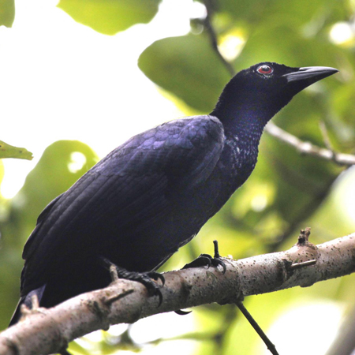
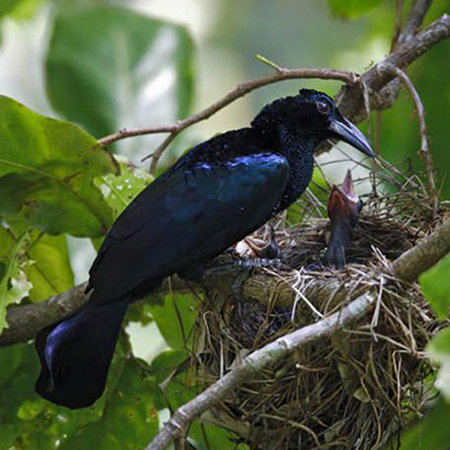
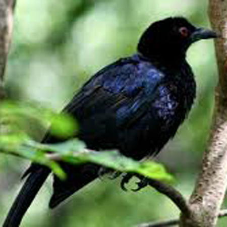
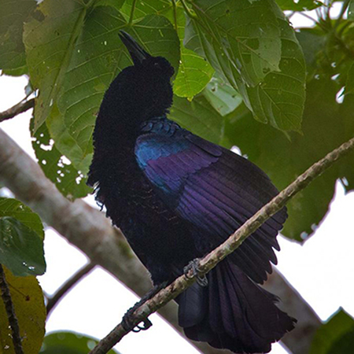

|  |
glossy-mantled manucode (Manucodia ater) ถูกค้นพบครั้งแรกโดยนักธรรมชาติวิทยา
ชาวฝรั่งเศสชื่อ René-Primevère Lesson ถิ่นอาศัยอยู่ตามที่ราบลุ่มป่าฝนในเกาะนิวกินี
ตามแถบแม่น้ำ ชายป่า ป่าพรุ และเกาะอื่นรอบๆ เป็นนกที่หากินตอนกลางวัน มักจะบินตัวเดียว
หรือบินเป็นคู่ น้อยที่จะพบเห็นบินเป็นกลุ่ม ใช้เวลาส่วนใหญ่ไปกับการหาอารหาร กินผลไม้ ผลมะเดื่อ
และแมลงเป็นหลัก ลักษณะ : มีความยาวตัวประมาณ 42ซม. ขนดำเงา เหลือบสะท้อนเขียว น้ำเงินและม่วง นัยน์ตาสีแดง จะงอยปากสีดำ มีขนหางยาว ตัวผู้และตัวเมียมีลักษณะคล้ายกัน ตัวเมียจะมีขนาดเล็กกว่าตัวผู้เล็กน้อย |
|
Jobi manucode (Manucodia jobiensis) เป็นนกชนิดอีกาที่อยู่ในวงตระกูลนกปักษาสวรรค์
ถิ่นอาศัยอยู่แถบที่ราบลุ่มในป่าของเกาะโจบิหรือเกาะเยเพน และตอนเหนือของเกาะนิวกินี
กินอาหารจำพวกผลไม้และแมลง
ลักษณะ : มีความยาวประมาณมากที่สุดถึง 34ซม. ขนสีน้ำเงิน แกมเขียว และ มีสีดำ และม่วงประปราย มีนัยน์ตาสีแดง ขนบริเวณลำคอมีลักษณะตั้งขึ้น ตัวผู้และตัวเมียมีลักษณะคล้ายกัน โดยตัวเมียมีขนาดเล็กกว่า นกชนิดนี้ลักษณะคล้ายกับนกชนิด crinkle-collared manucode โดยจะมีลักษณะต่างกันตรงขนบริเวณลำคอและมีหางที่สั้นกว่า |
 |
|  |
crinkle-collared manucode (Manucodia chalybatus) นกชินดนี้สามารถพบได้ที่ราบลุ่ม
ป่าเขาในเกาะนิวกินีและบนเกาะมิซูลทางแถบปาปัวตะวันตก กินผลไม้และผลมะเดื่อเป็นอาหาร
ลักษณะ : มีขนาดลำตัวยาวได้ถึง 36ซม. ขนสีน้ำเงิน แกมเขียว และ มีสีดำ และม่วง มีขนหางยาว นัยน์ตาสีแดง สีขนบริเวณอกสีเหลือบเขียว ตัวผู้และตัวเมียมีลักษณะคล้ายกัน โดยตัวเมียมีขนาดเล็กกว่าและมีสีม่วงน้อยกว่า นกชนิดนี้ลักษณะคล้ายกับนกชนิด Jobi manucode สามารถสังเกตได้จากขนบรืเวณคอจะมีสี เหลืองบรอนซ์ผสมกับเขียว |
|
curl-crested manucode (Manucodia comrii) เป็นนกเฉพาะถิ่นที่อาศัยอยู่ในปาปัวนิวกินี
โดยอาศัยอยู่ในเกาะทรอไบรอันและหมู่เกาะดอนเตรแคสโต สามารถพบได้บนเขาในป่าฝน ตามชายป่า ตามสวนต่างๆ
โดยชื่อนั้นถูกตั้งโดยนักสัตววิทยาชื่อ Philip Lutley Sclater หลักจากที่ ดอกเตอร์ Peter Comrie
เป็นผู้ค้นพบในปี 1874
ลักษณะ : ขนาดลำตัวยาวประมาณ 43ชม. มีขนมันเงา สีม่วง สีดำ และสีเขียว นัยน์ตาสีแดง ขนบริเวณอกมีสีเหลืองผสมเขียวลักษณะตั้งขึ้นมา ขนบริเวณหัวมีลักษณะขดและหางมีลักษณะม้วนเข้าหากันและกระดกขึ้นบน นก curl-crested manucode เป็นนกที่ตัวใหญ่ที่สุดในประเภท Manucode โดยมีน้ำหนักได้มากถึง 450 กรัม |
 |